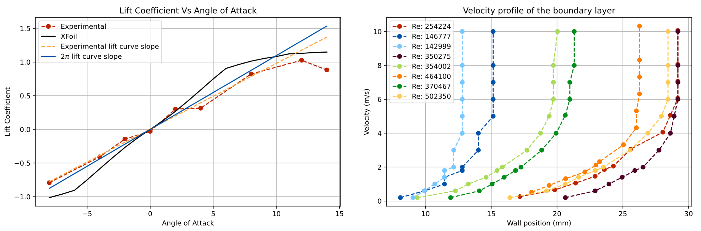

SHEET 01 / 07
DES—GMB
Year 2 Fixed Wing UAV Gimbal
In this project, I independently designed, built and programmed a dual-axis stabilised camera gimbal against a formal engineering spec. I used SOLIDWORKS for design, modelling and technical drawings. I programmed an Arduino microcontroller handling I2C, complementary filtering, and a custom control system. I used 3D printing and laser cutting to manufacture and iterate physical prototypes. My gimbal's final score of 14.2 was the second best that I am aware of across the course.
Project overview
Working within a 6 person team to design a wing and camera gimbal for a fixed wing UAV, I was individually responsible for the design and manufacture of the articulated gimbal assembly. The dual axis gimbal was to be powered by an Arduino microcontroller, IMU and two servo motors and served to counteract pitch and roll disturbances and maintain a level camera orientation.
Satisfying design requirements
I developed the gimbal against a formal system specification published by the university. These requirements included:
- The gimbal system should be actively stabilised
- The gimbal system must stabilise the camera to 0° pitch and 0° roll relative to the horizon
- The gimbal system must be capable of cancelling pitch and roll angles +/- 30°
- The gimbal system must be capable of cancelling pitch and roll rates of 90° per second and roll rates of 90° per second
- The system must begin stabilising within 5 seconds of power being applied and does not require any interaction (i.e. pressing a button)
- The gimbal system must be powered by the provided 5V 2A DC power supply only (the FPV camera system is powered separately)
 FIG. 2 — SOLIDWORKS technical drawing of the gimbal assembly
FIG. 2 — SOLIDWORKS technical drawing of the gimbal assembly
 FIG. 3 — SOLIDWORKS technical drawing of the camera mounting slot
FIG. 3 — SOLIDWORKS technical drawing of the camera mounting slot
Design and SOLIDWORKS modelling
I modelled a fully parameterised, equation-driven assembly allowing for rapid iteration and testing of design configurations and tolerances without the need to remodel the assembly from scratch.
The assembly was fully constrained and articulated, allowing me to demonstrate and evaluate the full range of motion of the gimbal and any potential collisions before manufacturing.
Arduino programming
I developed an Arduino program to stabilise the gimballed camera by decoding incoming IMU data (using the I2C protocol), resolving the appropriate control output and actuating the dual servo motors. View full code on GitHub
The IMU
The IMU was a 6 DOF sensor, providing accelerometer and gyroscope data. I developed a complementary filter to combine the sensor data into a single orientation estimate.
PID control systems
Live telemetry testing revealed that the initial PID was unreliable: The servos used absolute position commands rather than velocity inputs, so that a proportional gain less than 1 would result in persistent steady-state error. I replaced this with an integral-only controller. A tuned coefficient for each axis (pitch and roll) controlled what percentage of calculated error to be applied to the servo position each iteration. This approach converged quickly, eliminating error and stabilising the gimbal.
 FIG. 4 — Gimbal during manufacturing process
FIG. 4 — Gimbal during manufacturing process
3D printing
From the SOLIDWORKS parts, I 3D printed a series of prototype components in PLA to test the tolerances I had designed. The first iterations revealed fitment issues with the servo motors, which I resolved by adjusting the tolerance parameters in SOLIDWORKS. My final design was also printed with reduced infill to reduce weight and material usage. I also used variable layer heights to produce a better finish on, and fitment between, curved surfaces, while reducing print time elsewhere.
Laser cutting
I generated SOLIDWORKS drawings and laser cut the flat base components of the gimbal from 3mm plywood. This provided a lightweight, stable and rigid base from which to mount the servo motors and gimbal assembly. Laser cutting was chosen for its speed and accuracy, allowing a much tighter fit on the box joints, and Plywood would save considerable weight over a 3D printed base.
Arduino circuitry
I designed a circuit to allow the Arduino to be easily removed and reused in future projects, control the dual servo motors, and be powered by a 5V power supply from the UAV.
float a_pitch_wrapped = fmod((a_pitch - pitch) + PI, 2*PI) - PI + pitch;
float a_roll_wrapped = fmod((a_roll - roll) + PI, 2*PI) - PI + roll;
pitch = alpha * (pitch + g_pitch) + (1 - alpha) * a_pitch_wrapped;
roll = alpha * (roll + g_roll) + (1 - alpha) * a_roll_wrapped;
float pitch_deg = (pitch * 180 / PI);
float roll_deg = (roll * 180 / PI) + 180;
pitch_deg = constrain(pitch_deg, -90, 90);
roll_deg = constrain(roll_deg, -90, 90);
Testing and iteration
Testing exposed three significant issues with the gimbal:
Discontinuity error
The inverted IMU orientation caused the IMU readings to jump between +/- 179° when the camera oscillated around level. This caused massive, erroneous spikes in the control response. I resolved this by unwrapping the IMU output to a continuous range before calculating the control output.
Startup transient error
Delay in the startup of the IMU would supply false zero values to the control system. The unwrapping logic turned these values into +/- 179°, causing the control system to incorrectly react to a huge disturbance. This was resolved by delaying the initiation of the control loop until the IMU was functional, while ensuring the system remained within the specification startup time.
Strain or chafing of the power cable
The camera was mounted too far from the UAV power lead. This was fixed simply by reducing the size of the plywood frame.
Finally I tested and adjusted the control system coefficients to optimise settling time and smooth out jerky initial responses.
 FIG. 6 — Gimbal test results
FIG. 6 — Gimbal test results
Evaluation
The completed gimbal was evaluated by University of Southampton demonstrators by mounting a laser pointer in place of the camera, and tracking the path traced by the laser within a series of boxes shown above. Penalties were applied for exceeding the central box, scaled by distance from the centre, thus a lower score is better.
Results
As seen above, the gimbal performed well and remained primarily within the central area, earning minimal penalties for overshooting. My low score of 14.2 demonstrates the effectiveness of my mechanical design and control system. Full results were not published, but this is the second-best result I am aware of, with several groups' scores running into the hundreds.
SHEET 02 / 07
IND—MRC
Mercedes-AMG Petronas Formula One Team work experience
 FIG. 1 — Mock F1 steering wheel I produced during my work experience
FIG. 1 — Mock F1 steering wheel I produced during my work experience
I spent a week immersed in the aerodynamics department at Mercedes-AMG Petronas F1 team in Brackley, gaining invaluable insight into the design, manufacture and testing of aerodynamic components for their cars. During my time there, I completed a project of my own, making use of some of the most important tools and machines involved in rapid prototyping. Throughout this experience I met some amazing people who had built such a great working environment, and this became a large part of my motivation to pursue Aerospace engineering at university.
Steering wheel model
I produced a mock Formula One steering wheel, cutting and hand finishing an aluminium plaque, hand-laying carbon fibre sheets bonded with resin for the base, sandblasting and hand finishing 3D printed parts in a number of materials and assembling the final product using a range of workshop fixtures and tools.
Equipment demonstrations
I was given an in-depth tour and explanation of the full sized wind tunnel at the facility, and was taught the setup and calibration process of the impressive 5-axis CNC machines in the machine shop.
Quality control and metrology
I spent time in quality control, learning about the rigorous processes and standards that ensure high performance parts are manufactured within tight tolerances. I gained hands-on experience with a delicate, ruby-tipped coordinate measuring machine (CMM), alongside laser and microscope measurements, verifying manufactured parts against CAD models. During my stint in the department I discovered an incorrect dimension on a part, and correctly rejected it.
SHEET 03 / 07
SIM—CFD
ANSYS Computational Fluid Dynamics
I used ANSYS Fluent inside of ANSYS Workbench to run Euler CFD calculations for a 3D wing, and to resolve viscous CFD for laminar and turbulent boundary layers along a plate. I generated and imported CAD geometry, meshed the flow domain around the wing, applied boundary conditions, applied flow conditions, solved simulations using various methods, and processed, plotted and compared results to theory.
CAD model generation in OpenVSP
In OpenVSP, I created a half-span wing model using a NACA 1614 airfoil, and exported the model.
ANSYS Workbench setup
Using the "3D" analysis type, I created a new DesignModeler geometry and imported the half-span wing model from OpenVSP. I then created a cuboid bounding box, starting from the wing root, which extended outwards past the wing tip, and either side of the leading and trailing edges. The wing form was then subtracted from this bounding box to create the flow volume.
 FIG. 1 — Coarse wing mesh in ANSYS Fluent
FIG. 1 — Coarse wing mesh in ANSYS Fluent
Meshing
I generated initial unstructured meshes with element sizes of 0.2m (coarse), 0.05m (medium) and 0.01m (fine). Separately, I used curvature capture, and ran combined Hessian grid adaptation until convergence to refine the mesh in areas with complicated flows.
ANSYS Fluent
I used the "pressure-based, steady" solver, with air as the working fluid and simulation set to inviscid. I established the flow speed and angle of incidence (effectively the angle of attack) at the inlet and outlet. I established the wall boundary conditions, initialised tracked variables and initialised the simulation. I ran each case until residuals converged, and repeated for coarse, medium and fine meshes, and then three angles of attack (0°, 4° and 8°) using the medium mesh.
 FIG. 2 — ANSYS Fluent contour showing the air pressure around the airfoil
FIG. 2 — ANSYS Fluent contour showing the air pressure around the airfoil
 FIG. 3 — ANSYS Fluent contour showing the surface pressure distribution on the wing
FIG. 3 — ANSYS Fluent contour showing the surface pressure distribution on the wing
Post-processing
I extracted pressure contour plots for the wing root wall surface, and the wing surface itself. I also plotted pressure coefficient against x position along airfoil surface. I then recorded lift, drag and moment coefficients and compared these results to lifting line theory. The drag coefficient converged towards zero as mesh resolution increased - as expected for an inviscid flow. Lift coefficient however, increased with mesh resolution, likely due to the fact that Fluent resolves vortices in all directions - whereas lifting-line theory is limited to only spanwise vortices.
Flat plate boundary layers
I ran viscous CFD calculations for a laminar and turbulent boundary layer along the same no-slip flat plate. I extracted velocity profiles and computed displacement and momentum thickness, and shape factor for each regime. The laminar shape factor (2.43) closely matched the theoretical Blasius value (2.59), and the turbulent shape factor (1.33) fell within the expected 1.3-1.4 range. The turbulent velocity profile closely followed the logarithmic law of the wall between y+ ≈ 40-120, against a theoretical applicable range of 30-100. Finally I ran the SST transition model to capture the laminar-turbulent transition, which occurred at approximately 70% of the plate's length.
SHEET 04 / 07
SIM—FEA
ANSYS Finite Element Analysis
I used ANSYS Mechanical and APDL across a series of studies: A 1D spring system, a 1D cantilever beam, a 2D plate with a hole, and a 3D wing section. I generated and refined meshes, applied boundary conditions, point loads and distributed loads, static and dynamic simulations, performed convergence studies, processed and plotted results.
1D spring system
Modelled a spring system of three springs and four nodes with the two end nodes fixed. I applied a longitudinal force to one node and ran the simulation to determine the displacement of, and reaction force on each node.
 FIG. 1 — ANSYS Mechanical displacement contour of a cantilever beam under load
FIG. 1 — ANSYS Mechanical displacement contour of a cantilever beam under load
Static analysis of a 1D cantilever beam
I modelled a steel beam H-section with known properties, fixed at one end. In order to identify the optimal beam thickness, I applied a point load of 1000N to the beam, and refined beam thickness until the maximum stress in the beam was less than the stated yield stress of the material. This revealed the optimal beam thickness to save weight as 3.08mm. This beam thickness was then used in subsequent studies.
Varying loading conditions
I compared the maximum bending moment of the beam (which occurs at the root) for three loading conditions: point, uniform distributed and elliptical loading. Each load had a total magnitude of 1000N. Point loading resulted in the highest maximum bending moment at 268Nm, uniform loading gave 134Nm, and elliptical loading resulted in the lowest at 110Nm.
Mesh independence study
I increased the number of beam divisions from 5 to 200 and then beyond, and plotted this against maximum stress and tip deflection. I found that tip deflection converged at around 75 divisions, whereas maximum stress did not converge until around 200 divisions. I concluded that usually in FEA, a balance must be established between mesh resolution and computational cost, however with such a simple model in this example this was not necessary and I was able to resolve the model at 50,000 divisions in the same time as 5 to 200.
APDL automation
In order to expedite the above mesh convergence study up to extremely high resolution, I wrote an APDL script to incrementally reduce element size and output tip deflection and maximum stress for each iteration of a loop.
 FIG. 2 — ANSYS Mechanical contour showing the Von Mises stress distribution of a plate with a hole
FIG. 2 — ANSYS Mechanical contour showing the Von Mises stress distribution of a plate with a hole
2D plate with a hole
I defined a 2D (1468 x 400mm)plate with an off-centre circular hole cut out, fixed along one edge, with a negative pressure applied along the opposite edge - pulling the plate apart.
Mesh sensitivity study
For a set of three different hole radii (60mm, 80mm and 100mm), I ran a mesh-converged study using three mesh sizes. I plotted mesh size against maximum stress, hole radius against maximum stress, and hole radius against safety factor. I found that the maximum stress and stress-concentration factor increased with hole radius, due to reduced ligament width between the hole and plate edge.
Hole offset study
I varied the hole offset distance from the centre of the plate in the X and Y directions and investigated the effect on stress-concentration factor (SCF). I discovered, at equal ligament width, the SCF was much higher when the hole was closer to the loaded edge; 4.78 compared to 3.27 on the unloaded side of the centre. This is because stresses near the loaded edge must redistribute over a shorter distance.
 FIG. 3 — Python plots showing deflection and stress convergence for SHELL181 vs SHELL281 wing elements
FIG. 3 — Python plots showing deflection and stress convergence for SHELL181 vs SHELL281 wing elements
Static structural analysis of a 3D wing
I imported the 3D wing model into ANSYS, alternating between SHELL181 and SHELL281 elements to simulate the wing skin. I applied the fixed boundary condition at the root, and then performed a mesh refinement study on each element type. I adjusted element size and studied convergence of maximum deflection and maximum stress measurements. SHELL181 is a linear first-order shell, generally less accurate than the SHELL281, a quadratic second-order shell. Therefore SHELL181 converged at lower element sizes, up to 0.015m, but was able to resolve higher resolution meshes that caused SHELL281 to fail at 0.05m. This clearly demonstrated the difference in computational cost between the two element types.
Minimising weight
For a set of materials and wing skin thicknesses, I compared tip deflection and maximum stress to maximum allowable stress. Maximum allowable stress was calculated using the yield stress of each material, and a standard aerospace safety factor of 1.5. I reduced skin thickness to find the minimum weight required, and corresponding optimal thickness for each material so that maximum stress was less than allowable stress. For an aircraft, minimising weight is essential to improve payload capacity, or reduce lift requirements and fuel consumption. In this example I concluded that Carbon Fibre was the optimal material, with a minimum thickness of 0.0088m and weight of only 10,246kg.
Modal dynamic analysis
Computed and animated wing oscillations for the first five natural frequencies, and performed a mesh convergence study. This allowed me to visualise the dynamic behaviour of the wing.
SHEET 05 / 07
TST—WND
Wind Tunnel Testing
 FIG. 1 — Wing section mounted in the RJ Mitchell wind tunnel
FIG. 1 — Wing section mounted in the RJ Mitchell wind tunnel
I investigated the aerodynamic performance of a NACA 0020 based wing section across three wind tunnel experiments: A 2D airfoil lift experiment, flat plate boundary layer analysis, and a full scale wind tunnel test. I compared results across the three experiments and validated them against XFLR5 and accepted theory.
Airfoil lift
I mounted a NACA 0020 airfoil section in a small, low-speed wind tunnel. Boundary walls at each end of the span ensured it behaved as an effectively infinite 2D span, eliminating 3D effects such as wingtip vortices. I measured surface pressure displayed on an inclined manometer via pressure tappings along the airfoil's upper and lower surface across a range of angles of attack, and numerically integrated this data to obtain lift coefficient.

FIG. 2 — Python plots showing lift curve slope and boundary layer plotsXFoil comparison
I ran an XFoil analysis of the same airfoil section, and compared the data between my experimental results, XFoil and thin-airfoil theory. All three methods passed through the origin as expected, and shared very similar gradients.
Smooth flat plate boundary layer profile
I measured the velocity profile of a smooth flat plate at a range of Reynolds numbers by moving a pitot probe positioned at the trailing edge upwards from the plate surface, capturing velocity within and outside the boundary layer. From this data I calculated momentum thickness, and used numerical integration to determine the skin-friction drag coefficient.
Theory comparison
I graphed the velocity profiles for each Reynolds number, and found that all of the profiles resembled laminar boundary layers, however I compared my skin-friction drag coefficients against laminar and turbulent theory and found that they fit neither. Examining my Reynolds number revealed that my results were close to transition Reynolds numbers, likely explaining the discrepancy.
RJ Mitchell full-scale wind tunnel
A half-span wing model with the same NACA 0020 airfoil was installed in the university's full-scale wind tunnel. The wing is attached to a force balance which measures the forces on the wing, which I resolved into lift and drag components. The wing is tested through a range of angles of attack, -4° to 20°.
Python data analysis
By fitting a curve to the wind tunnel data in Python, I calculated the lift and drag coefficients for the full-span wing, used to evaluate maximum lift-drag ratio (aerodynamic efficiency); 12.76 - consistent with published literature for similar wings - and corresponding optimal angle of attack of 6.15°. I calculated the Oswald efficiency of the wing; 0.956, and found it lay within the expected range of 0.700-1.000.
XFLR5 comparison
This experimental data is compared to XFLR5 results for the full wing in the same flight conditions. Plotting aerodynamic efficiency against angle of attack, my experimental data traced a very similar curve to the XFLR5 results, although shifted by around 2° towards higher angles of attack, but correctly passing through the origin.
Drag approximation as a flat plate
To estimate the viscous drag coefficient, I doubled the flat plate drag coefficient from the previous experiment to account for the upper and lower wing surfaces. Using this value; 0.0076, I determined that viscous drag was not the dominant drag component of the drag coefficient for the full wing and only made up roughly 30% of the total; 0.0256. Instead, the drag coefficient is dominated by form and interference drag at zero lift, making up the remaining 0.0180.
SHEET 06 / 07
DES—FXW
Year 1 Fixed Wing UAV design project
Concepted, researched and designed a fixed wing UAV with a suitable payload as part of a group, then individually designed and produced a representative wing structure using XFLR5, SOLIDWORKS, and laser cutting.
Project overview
Working as a group, we were tasked with defining a UAV concept, function, and appropriate payload. We then individually designed and produced a representative wing structure.
Secondary research
We chose to design an emergency broadcast UAV, to provide early warnings to people in remote and/or unconnected areas. We then researched natural disasters, and decided to specialise in floods. This decision was made due to suitable warning times, allowing a UAV to be deployed in time, and relatively manageable air conditions for UAV flight. I then researched suitable spar materials for the wing.
Generating a design specification
As a team we developed a design specification governing performance, safety, cost, environmental impact and form.
 FIG. 1 — UAV initial design sketches
FIG. 1 — UAV initial design sketches
Ideation and concept selection
Each member of the team generated a number of design sketches, before choosing one to present to the group. The team then evaluated each design using a series of go/no-go questions, and a weighted ranking matrix based on the design specification subheadings to score each concept and numerically determine the best design.
 FIG. 2 — XFLR5 wing design iterations with corresponding lift/drag ratios
FIG. 2 — XFLR5 wing design iterations with corresponding lift/drag ratios
Aerodynamic design in XFLR5
Using XFLR5, I iterated through a series of NACA 4 digit airfoils, and refined the wing geometry in order to maximise aerodynamic efficiency (lift to drag ratio). The primary constraints I had to consider were wing length and aspect ratio, to ensure there was enough internal space to accommodate my spar design.
Python structural analysis
I calculated the maximum tip deflection of my wing half span using a Python script. The script used numerical integration to resolve the deflection across the wing from simulated XFLR5 bending moment data for steady level flight, moment of inertia of my chosen spar geometry and Young's modulus of my chosen spar material. I chose medium modulus carbon fibre as my spar material in order to keep tip deflection below 10% of wing span, as per the design specification.
SOLIDWORKS model
I painstakingly reconstructed the wing geometry in SOLIDWORKS, by lofting between the airfoil profiles, oriented carefully to preserve the wing shape, including twist and sweep. The model was fully parameterised - allowing me to adjust the model if necessary.
Laser cutting and assembly
From the SOLIDWORKS model, I generated drawings for each unique rib section, which I then laser cut from 3mm plywood. I then threaded the ribs onto the dual spar structure and glued them in place.
The finished half-span served as a representative model of my wing design and concluded the project.
SHEET 07 / 07
DES—GLD
Balsa Wood Glider Competition
 FIG. 1 — Balsa Wood Glider
FIG. 1 — Balsa Wood Glider
As a team, designed and manufactured a stable glider from a limited quantity of balsa wood, able to reliably strike a wall-mounted target with accuracy, winning the competition outright against around 300 fellow engineering students.
Challenge
The objective of this project was to design and manufacture a glider with stable and consistent flight characteristics, from a limited supply of balsa wood, a small amount of adhesive and some blue tack ballast. The aircraft would be hand-launched and needed to fly straight, consistently and accurately to strike the wall-mounted target.
Optimising aerodynamic efficiency
My team and I developed a glider which maximised the aspect ratio of the main wing within the permitted footprint, resulting in high aerodynamic efficiency.
Iteration and testing for stability
Following iterative testing and refinement we were able to optimise the mass distribution and resulting centre of gravity to achieve stable flight characteristics.
Competition result
The final design proved itself reliable and ultimately won the competition - outperforming around 300 fellow engineering students.